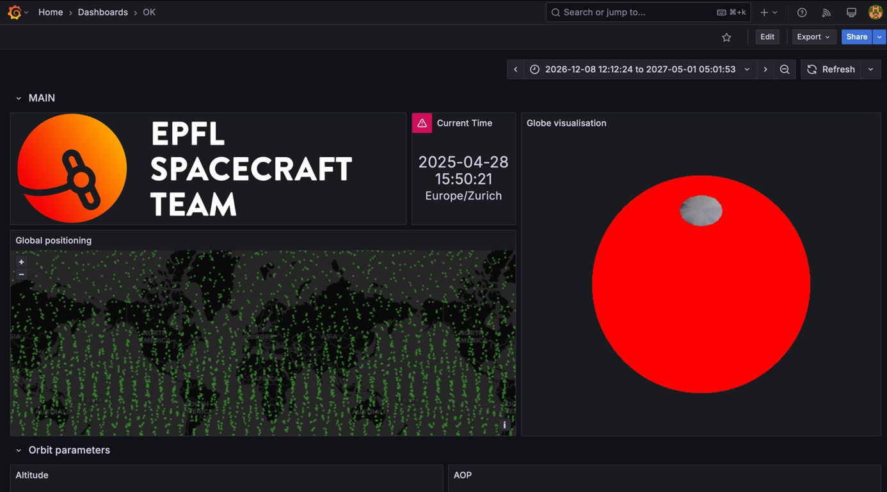
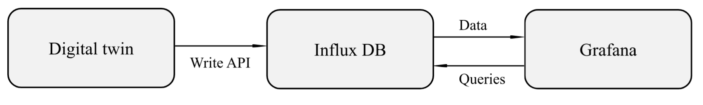
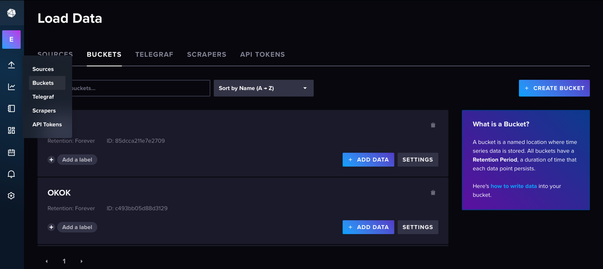
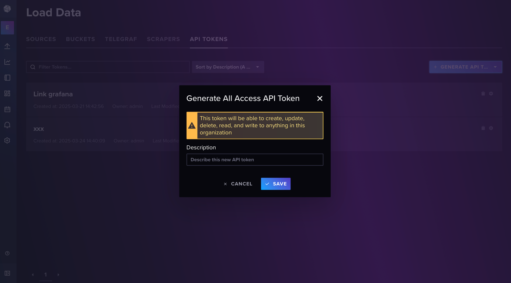
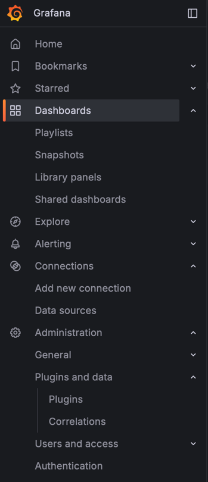
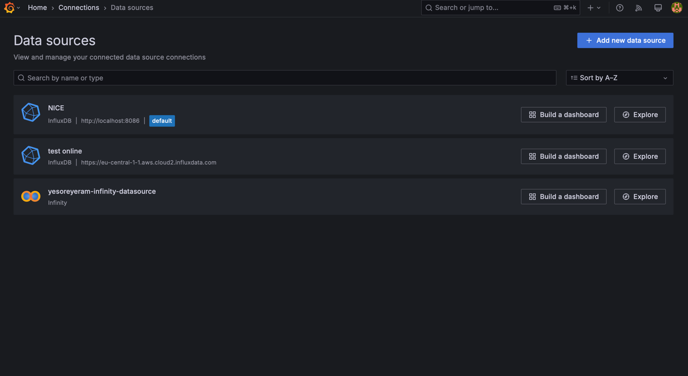
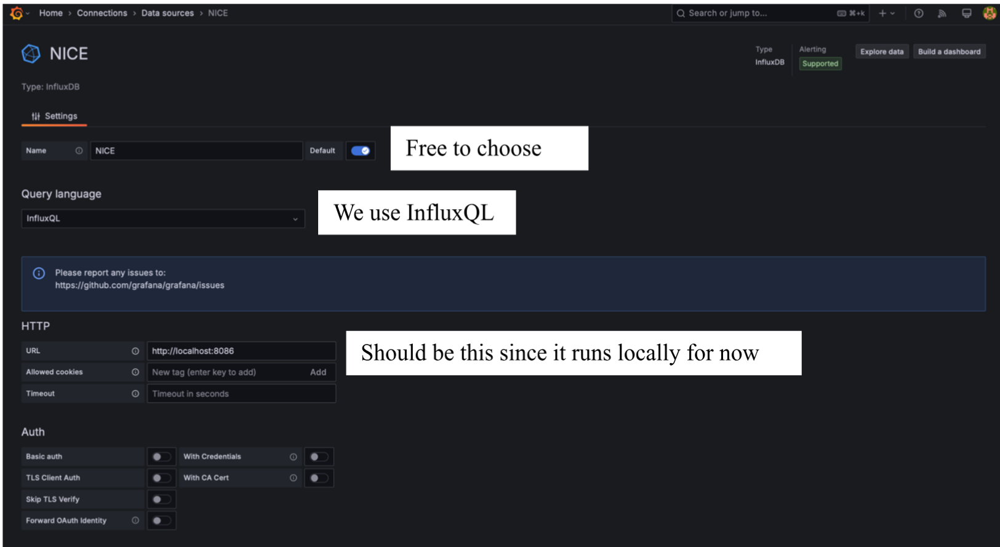
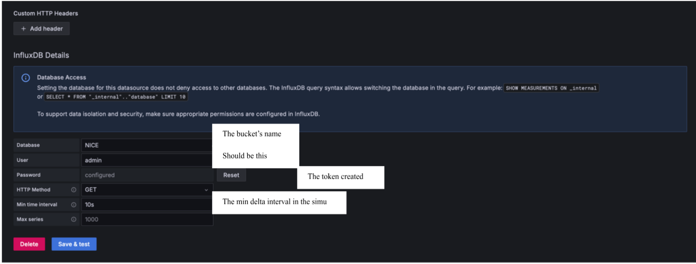
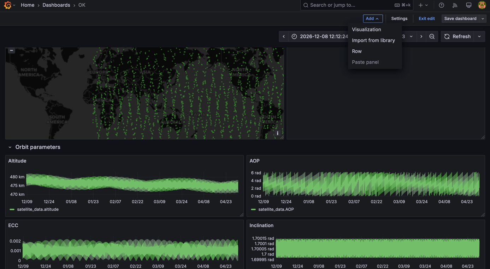
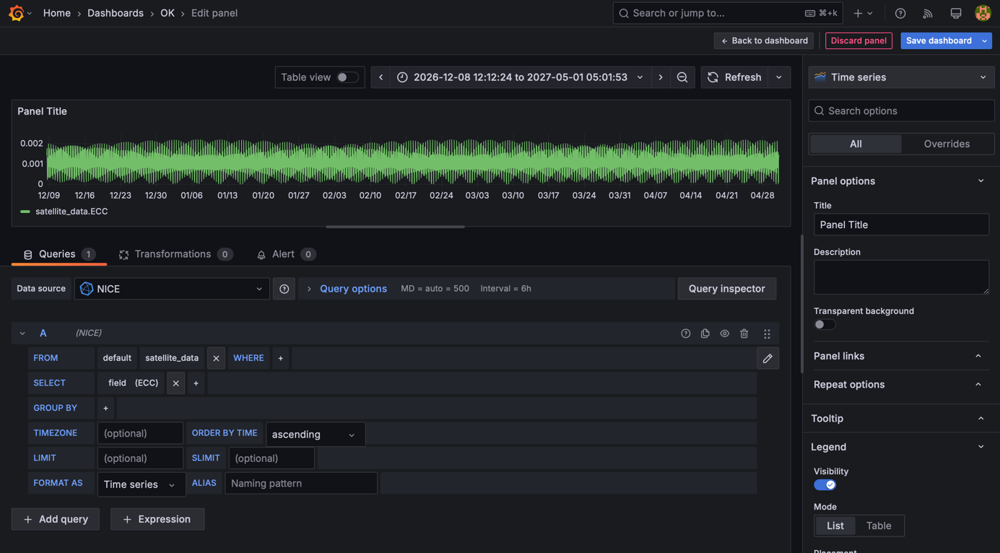

Grafana Visualization Documentation
Overview
Grafana is a software used for data visualization. It queries data from multiple databases and displays it a* Export & Import Dashboards: https://doc.sitecore.com/xp/en/developers/101/managed-cloud/import-and-export-your-grafana-dashboards.html#export-your-grafana-dashboard’s a very versatile tool, many programming languages are allowed and we can create and personalize as many visualizations as we want. Thanks to its dynamic visualization, it allows to better visualize, zoom, and slide in the data, compared to fixed plots.
For now, it’s used to visualize the data coming from the digital twin but its ultimate goal is to visualize in real time all the data coming from the satellite to assess and monitor its health and operations.
{kind=link}

Final Grafana dashboard showing various CubeSat metrics
System Architecture
To have a functional interface we need 3 components:
A satellite (or simulation) that sends the data
A database to store and return the data
A dashboard to write the queries and visualize the data
As the satellite is supposed to join the satnogs network, we chose to use the same infrastructure, meaning using InfluxDB as the database.
{kind=link}

Overview of the Grafana visualization system architecture
InfluxDB Setup
Database Configuration
To store the data sent by the simulation, we need a “bucket” that can be created here. When creating, we can select the time of retention.
{kind=link}

InfluxDB bucket selection interface
API Token Generation
We also need a token for authentication and API access, both in the python and Grafana interfaces. It can be created in the menu “API TOKENS” and must be copied for next steps.
{kind=link}

Generating an API token in InfluxDB
Grafana Setup
Interface Overview
This is what the side menu looks like.
{kind=link}

Grafana sidebar menu
The submenus that we use most are:
Dashboards: to see the dashboards that we build
Connections: to set up connections between Grafana and the different databases
Data Source Configuration
To set up a communication with the database, we need to add a source in “Add new connection”, then click on “Add new data source”
{kind=link}

Adding a new data source in Grafana
We then need to choose InfluxDB and configure the connection with the following panels:
{kind=link}

InfluxDB data source configuration - Part 1
{kind=link}

InfluxDB data source configuration - Part 2
Once everything is set up, click on “Save & test”, if it works it should display “datasource is working. 1 measurements found”
Dashboard Creation
Then you can go back on the dashboard and start editing it. To add a panel, click on “Add > Visualization”, the rows are here to organize the global layout.
{kind=link}

Adding a new panel to the dashboard
You can then edit the query either by clicking on the different measurements and fields or directly writing it in InfluxQL with the pen icon. You directly see the data chosen on the upper graph and you can customize its appearance in the right panel.
{kind=link}

Editing a panel with query configuration and visualization options
Python Integration
The simulation outputs csv files that store all the data of interest. We need to read these files, connect to the database and send the data. Everything is explained in the file INFLUX_DB_LOCAL.ipynb.
Installation & Setup
Prerequisites
Install the required software:
Grafana: https://grafana.com/grafana/download
There are two ways to use Grafana: online and local, same for InfluxDB. For now everything works locally.
Default Credentials
Credentials for Grafana and InfluxDB:
Username: admin
Password: maxiadri
Starting the Services
Launch InfluxDB
Open a terminal and run:
influxd
Access: http://localhost:8086/
Launch Grafana
Go to the installation folder, open a terminal and run:
./bin/grafana server
Access: http://localhost:3000/
Dashboard Import/Export
You can import the dashboard GRAFANA_dashboard.json directly in the Dashboards menu in Grafana. At the end of your semester, you can then export the dashboard (save it as json) and store it in the drive for the next people to use.
Data Upload Process
To upload the data to the database:
Run the simulation to generate the data
Run
INFLUX_DB_LOCAL.ipynbto upload it to InfluxDB
References
InfluxDB Python Client: https://docs.influxdata.com/influxdb/cloud/api-guide/client-libraries/python/
SatNOGS Dashboard Example: https://dashboard.satnogs.org/d/1b1zIkuIz/catsat?orgId=1&refresh=30s&from=now-2d&to=now&timezone=utc&var-filter=&var-frame_type=$__all
Export & Import Dashboards: https://doc.sitecore.com/xp/en/developers/101/managed-cloud/import-and-export-your-grafana-dashboards.html#export-your-grafana-dashboard